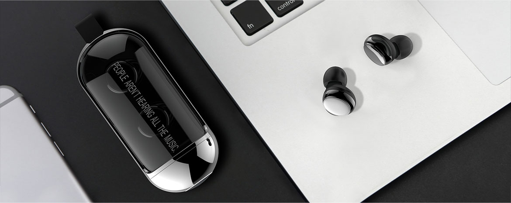
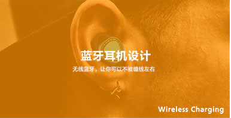
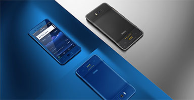

A--ONE
TWS BLUETOOTH EARPHONE
针对户外爱好者和旅行者的多功能工具，它集合了手电筒，应急移动电源，户外泛光灯，户外警示灯， 应急破窗锤等功能，并且将它们合理的组合到一起，非常方便使用。 这款户外多功能工具是给人以值得信赖，坚固耐用的感受。35度倾斜角，能保证用户在使用手电筒的时 候可以有最良好的手持体验，同时35度倾斜角也是最佳的破窗操作角度。硬朗的线条，外露的螺丝，散


针对户外爱好者和旅行者的多功能工具，它集合了手电筒，应急移动电源，户外泛光灯，户外警示灯， 应急破窗锤等功能，并且将它们合理的组合到一起，非常方便使用。 这款户外多功能工具是给人以值得信赖，坚固耐用的感受。35度倾斜角，能保证用户在使用手电筒的时 候可以有最良好的手持体验,并且将它们合理的组合到一起 .
RELATED
 